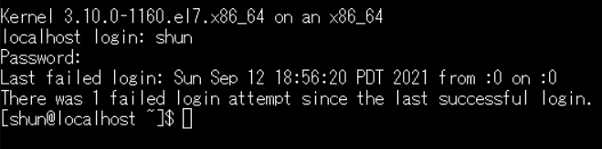
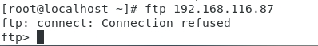

もくじ
- 環境設定
- telnet
- c
- d
環境設定
追加パッケージのインストール
・ファイアウォール自動起動解除の設定
- su - #管理者権限に移行
- setenforce 0
- systemctl stop firewalld
- systemctl disable firewalld
- systemctl stop NetworkManager
- systemctl disable NetworkManager
SELinux Linux OSのセキュリティ機能
getenforce SE Linuxの状態を表示
setenforce SE Linuxの状態を設定
・systemctl Linuxシステムの管理用コマンド
start
|
<サービス> サービスの開始
|
stop
|
<サービス> サービスの停止
|
restart
|
<サービス> サービスの再起動
|
enable
|
<サービス> サービスの自動起動をON
|
diasable
|
<サービス> サービスの自動起動をOFF
|
・ネットワークマネージャーを再起動
- systemctl restart network
管理->仮想マシン設定に行く。
接続済みにチェックを入れ、ISOイメージファイルを使用していることを確認
・selinuxの無効化
- vi /etc/selinux/config
- SELINUX=enforcing -> SELINUX=disable
vi Linuxのテキストエディタ
初期状態:コマンドモード
「:」+コマンド
:q 終了
:w ファイルへ書き込み
:w! 強制的にファイルへの書き込み
:wq! ファイルに強制書き込みして終了
:set number 行番号を表示
ホスト名 cp2.com
・ISOのファイルのマウントをやり直す
- umount /dev/sr0
- mkdir /media/CentOS
- mount /dev/sr0 /media/CentOS
・samba,telnetなどの追加パッケージのインストール
- yum --disablerepo=\* --enablerepo=c7-media install -y ftp httpd samba-client sendmail-cf sendmail telnet-server telnet xinetd
・実行コマンドの履歴を見る・指定して再び実行する
・何かのインストール
- http://www.rpmfind.net/linux/epel/7/x86_64/Packages/l/libc-client-2007f-16.el7.x86_64.rpm
- http://rpmfind.net/linux/epel/7/x86_64/Packages/u/uw-imap-2007f-16.el7.x86_64.rpm
・ディレクトリの移動
- cs /root
- cd .
- cd ../
- ls
- cd ダウンロード(downlords)
・何かのインストール
- rpm -ivh uw-imap-2007f-16.el7.x86_64.rpm libc-client-2007f-16.el7.x86_64.rpm
・telnetの設定
- systemctl start telnet.socket
- systemctl enable telnet.socket
- systemctl is-enabled telnet.socket
・ipop3の設定の変更
- vi /etc/xinetd.d/ipop3
- disable =yesをコメントアウト
・xinetdの起動と自動起動
- systemctl start xinetd
- systemctl enable xinetd
・メールサーバーの設定
- cd /etc/mail
- cp -p sendmail.cf sendmail.cf.original
- vi sendmail.cf
- viを起動したらコマンドモードで:139を実行し、
- C{w}cp2.com
- viを起動したらコマンドモードで:264を実行し、
- 0 DaemonPort0ptions=Port=smtp,Addr=(IPアドレス), Name=MTA
・ドメイン名の確認・変更
- hostname
- vim /etc/resolv.conf
・設定ファイルの確認（差分の表示
- diff sendmail.cf.original sendmail.cf
・ドメインを設定
- ip addr(ip確認ができる)
- hostname(ホスト名の表示)
- vi hosts
- yum install vsftpd
- cd /etc/vsftpd
- cp -p vsftpd.conf vsftpd.conf.original
- vi vsftpd.conf
- vi /etc/vsftpd/vsftpd.conf
pwd
・設定ファイルの変更
- :82
- ascii_upload_enable=YES
- ascii_download_enable=YES
- diff vsftpd.conf.original vsftpd.conf
・vsftpd、httpdサービスの起動設定
- systemctl start vsftpd.service
- systemctl enable vsftpd.service
- systemctl start httpd.service
- systemctl enable httpd.service
- systemctl status vsftpd.service
- cd /etc/selinux/
- cp -p config config.original
- vi config
- diff config.original config
・シャットダウンコマンド
- shutdown -h now
- shutdown -r now
windowsからの接続確認
TCP/IPモジュールの動作確認
ping 127.0.0.1
(ping 192.168.217.131)
追加確認、ルータを介してインターネット接続をしている場合
・ルータまでの接続確認とルータの動作確認
>プロバイダの情報確認
・プロバイダDNSまでの接続確認
・インターネット上のサーバとの接続確認
・コマンドプロンプトでネットの状態確認
TelnetでCentosに接続する
tera termというオープンソースのリモートログオンクライアントソフトをダウンロードします。
ダウンロードリンク
ダウンロードしたら、起動し、ホストにはCentOSのIPアドレスを入力。サービスはtelnetを選択し、OKで起動します。
まずはログインユーザーを問われるのでcentosに登録してあるユーザー名を入力し、エンターを押し実行します。
実行したらPassword:という文字が左側に出ます。文字を入力しても表示されないので、間違えないようにパスワードを入力しましょう。
実行したら以下の様になっている筈です。

これでcentosへリモートで操作ができるようになりました。
・ロケールの表示
・文字コードの変更
・linuxの環境設定を行う。
・環境変数の表示
・catコマンド
「>」リダイレクト演算子
コマンド > ファイル名
「コマンド」の出力結果を「ファイル名」
の名前をつけて保存
・実行中のプロセスを表示。
・ファイルの中身をスクロールなどが利用可能な形式で表示
-r(リカー支部)は再帰的にコマンドを実行するという意味合いが強い。(コマンドによっては違う)
-f(フォース(力))は強制的にというオプション
linuxシステムにおけるファイルの属性
-rwx rwx rwx
-はファイルの種類、このファイルの所有者、グループの権限、その他。
「-」 普通のファイル
「d」 ディレクトリ
「l」 シンボリック
r(read読み込み)w(write書き込み)x(execution実行)
・chmodコマンド-ファイルの権限を変更
- chmod 権限の値 対象ファイル名
- chmod 664 filex
6(rwx 110 rw-)6(rwx 110 rw-)4(rwx 100 r--)
FTPを使ってみる
・

ftpでログインができました。
・